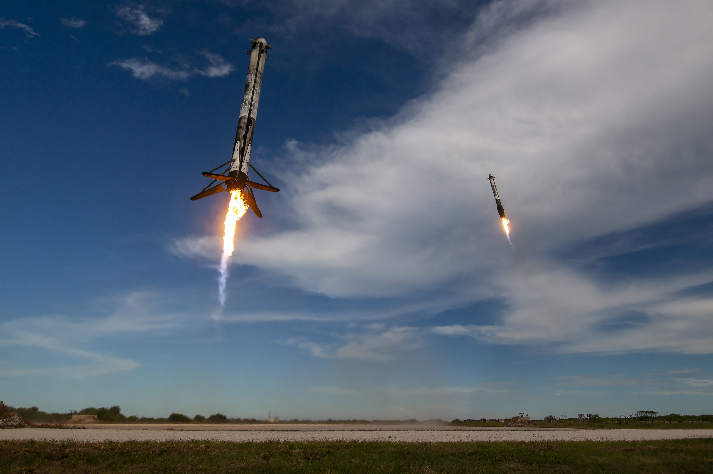

Vejen til rummet.
Forbindelsen til Jorden.
SpaceX sender mennesker og satellitter i kredsløb og leverer internetforbindelser gennem Starlink. AI udgjorde godt halvdelen af selskabets omsætning i 3. kvartal 2026. Her kan du undersøge, hvordan teknologien virker, og hvad de forskellige forretninger bidrager med.
Forstå sammenhængen ↓Foto via NOAA / NASASPCX · Nasdaq
Opdateret 24.10.2026
Markedsføringsmateriale · ikke personlig investeringsrådgivning. Indholdet tager ikke hensyn til din økonomi, erfaring eller risikovillighed. Henter fondsvægt…
Risiko, interesser og investorinformation ↓Tre forretninger.
Forskellige opgaver.
Rumfart, Starlink og AI har hver sin teknik, sine kunder og sin økonomi.
Skematisk illustration · afstande og størrelser er ikke i målestok.
Raketten er transporten. Genbrug ændrer regnestykket.
En raket består af trin, der arbejder efter hinanden. Falcon 9 bringer det nederste trin med de store motorer tilbage til Jorden, så det kan flyve igen. Det sparer ikke al klargøring, og resten af raketten genbruges ikke på samme måde. Men det ændrer, hvordan en dyr maskine kan bruges over flere missioner.
Kunder betaler for at få satellitter, last eller mennesker ud i rummet. SpaceX bruger også opsendelserne internt til Starlink. En intern opsendelse er derfor ikke det samme som en ny ekstern kundeindtægt.
Det afhænger af: Det afgørende er både, hvor ofte raketten kan flyve, og hvor sikkert og billigt den kan klargøres igen.
Falcon 9 hos SpaceX ↗Opsendelsen varer minutter. Forbindelsen betales løbende.
Starlink forbinder terminaler på Jorden med satellitter i lave kredsløb. Satellitterne flytter sig hele tiden, så forbindelsen skal overdrages fra én til den næste. Netværket består også af jordstationer, software og forbindelser mellem satellitter.
Her er produktet internetadgang. Kunden betaler for udstyr og en tjeneste, der typisk betales løbende. Flere satellitter kan give mere kapacitet, men netværket skal også vedligeholdes og fornys.
Det afhænger af: Kundeantal, indtægt pr. kunde og netværkets kapacitet påvirker økonomien.
Teknologien bag Starlink ↗Koncernen rækker også ind i datacentret.
SpaceX rapporterer nu også AI-modeller, software og beregningsinfrastruktur i segmentet Super Intelligence. Her er produktet beregning eller software, mens de fysiske forudsætninger blandt andet er chips, strøm og køling.
Forretningen skal forstås særskilt fra opsendelser og internetabonnementer. Store aftaler kan øge omsætningen, samtidig med at udbygningen kræver store investeringer.
Det afhænger af: Kapacitetsudnyttelse, kundeaftaler og udgifter til infrastrukturen påvirker økonomien.
Læs segmentbeskrivelsen ↗
Raketten er ikke færdig,
når den har sendt sin last afsted.
På billedet er satellitten på vej videre, mens to rakettrin vender tilbage til Jorden. Motorerne bremser nedstigningen, og landingsbenene gør det muligt at sætte trinnene ned igen.
Det er forskellen mellem at bygge et nyt rakettrin til hver tur og at kunne bruge det samme flere gange. Men en vellykket landing er kun begyndelsen: inspektion, klargøring og næste opsendelse er også en del af regnestykket.
Genbrug kan fordele udgiften til et rakettrin over flere flyvninger. Hvor meget det betyder, afhænger også af vedligeholdelse, kapacitet og hvor ofte raketten kommer afsted.
SpaceX er både leverandør
og sin egen kunde.
Egne raketter kan sætte egne satellitter i kredsløb. Det giver kontrol over flere led, men kræver også, at selskabet finansierer og driver dem. Teknisk sammenhæng gør ikke automatisk alle dele lige rentable.
Omsætning fortæller kun
en del af historien.
Sammenlign de tre segmenter. En stor forretning målt på omsætning behøver ikke bidrage mest til driftsresultatet.
Et kig ind i regnskabet
3. kvartal 2026 · juli–september
| Forretning | Omsætning | Driftsresultat | Anlæg |
|---|---|---|---|
| Rumfart | 1.767 | −7 | 1.606 |
| Starlink | 5.248 | 2.367 | 1.543 |
| AI | 7.560 | 431 | 16.444 |
Søjlerne bruger samme skala i begge kvartaler: 0–7.560 mio. USD. Driftsresultat er resultat før renter og skat. Anlægsinvesteringer er udgifter til aktiver, der skal bruges over flere år; årets afskrivninger indgår i driftsresultatet, men hele investeringen trækkes ikke fra på én gang.
AI havde størst omsætning; Starlink bidrog mest til driftsresultatet. Anlægsinvesteringerne oversteg omsætningen, og 16,44 mia. USD gik til AI.
AI-væksten kom ifølge selskabet især fra nye cloudaftaler, Cursor-opkøbet og øget brug af Grok. Cursor indgår fra 14.08.2026 og bidrog med 608 mio. USD. Driftsresultatet inkluderer 1,2 mia. USD i aktiebaseret aflønning knyttet til opkøbet. Kvartalerne har derfor forskellig koncernsammensætning.
Kilde: Q3-regnskabsmeddelelsen, 8-K bilag 99.1, offentliggjort 20.10.2026. Super Intelligence er selskabets regnskabsnavn for AI-segmentet.
Kan kapaciteten betale sig?
Raketter, satellitter og datacentre kræver kapital, før kunderne bruger kapaciteten. Udgifterne kommer ofte før indtægterne.
Hvor robust er driften?
Opsendelsesfejl, udfald og forsinkelser kan ramme kunder og økonomi forskelligt. Et vellykket teknisk forsøg er ikke det samme som stabil drift.
Hvad kræver tilladelse?
Opsendelser, frekvenser og adgang til markeder afhænger af myndigheder. Teknologien kan være klar, før den må bruges overalt.
Fra et enkelt mål
til flere forretninger.
Udvalgte milepæle. Historien viser, hvad selskabet har opnået; den er ikke en tidsplan for det næste gennembrud.
En ny raketvirksomhed
SpaceX bliver grundlagt. Udgangspunktet er at udvikle og bygge egne raketter.
Kilde til En ny raketvirksomhed ↗Dragon når rumstationen
Lastflyvningen viser, at et privat udviklet rumfartøj kan levere til ISS og vende tilbage.
Kilde til Dragon når rumstationen ↗Første trin lander igen
Falcon 9 lander sit første trin efter en opsendelse. Det er et afgørende skridt mod at genbruge rakettrin frem for at bygge et nyt til hver flyvning.
Kilde til Første trin lander igen ↗Mennesker om bord
Demo-2 bringer astronauter til ISS. Senere samme år certificerer NASA systemet til regelmæssige bemandede flyvninger.
Kilde til Mennesker om bord ↗SpaceX bliver børsnoteret
Aktien begynder at handle under SPCX. Børshistorikken er derfor væsentligt kortere end selskabets historie.
Kilde til SpaceX bliver børsnoteret ↗Starship bærer en nyttelast
Starship leverer 26 af selskabets egne Starlink V3-satellitter. Selskabet omtaler missionen som indtægtsgivende; det er ikke dokumentation for en ekstern kundeindtægt.
Kilde til Starship bærer en nyttelast ↗Aktien siden børsnoteringen.
Grafen viser daglige lukkekurser fra 12.06.2026 til 23.10.2026. Kursændringen er målt fra første handelsdags lukkekurs, ikke fra udbudskursen.
Historisk illustration til og med 23.10.2026. Aktuelle kurstal fra Azure vises ovenfor.
Kurs siden børsnoteringen
Seneste lukkekurs: 147,49 USD, 2026-10-23. Interaktiv graf kræver JavaScript.
Gemte daglige lukkekurser i USD, ikke realtidskurser. Grafen viser aktiens kursændring uden udbytte og handelsomkostninger, ikke fondens afkast. Serien begynder ved børsnoteringen; der findes endnu ikke et helt års kurshistorik.
Kilde: Yahoo Finance ↗Historisk kursudvikling er ikke en pålidelig indikator for fremtidige resultater. Aktien kan falde i værdi, og hele det investerede beløb kan tabes. Valutakursændringer påvirker resultatet målt i danske kroner. Investering gennem fonden er ikke det samme som at eje SpaceX-aktien direkte.
Det er lettere at forstå,
når man har set det.
To historiske optagelser fra SpaceX. Se efter genbrug af rakettrinnene og opsendelse af satellitter — de konkrete mekanismer bag fortællingen.
Falcon Heavy & Starman
To sideboostere lander efter den første Falcon Heavy-flyvning. Det gør genbrug fysisk og let at få øje på.
Åbn på YouTube ↗En Starlink-opsendelse
Følg en mission med 53 satellitter. Første trin fløj her for tolvte gang.
Åbn på YouTube ↗Afspilning opretter forbindelse til YouTube. Videoerne er selskabets eget materiale og vises ikke som en uafhængig vurdering.
Hvor vil du tættere på?
Et grundlag for at forstå.
Ikke en personlig anbefaling.
Materialets formål
Udgivet af NewDeal Invest som markedsføringsmateriale. PMINDI og PMINDIAKK forvaltes af Fundmarket A/S. Siden forklarer selskabets teknologi og forretning og tager ikke stilling til, om en investering er egnet til dig. Den er ikke personlig investerings- eller skatterådgivning.
Hvis du overvejer fonden
Du kan miste en del af eller hele din investering. Teknologiaktier kan svinge betydeligt, og fonden er også udsat for valuta- og sektorrisiko. Læs dokumentet med central information (PRIIP-KID), prospektet og risikobeskrivelsen inden en investeringsbeslutning.
PMINDI: KID og prospekt hos Fundmarket ↗Fondens risikofaktorer ↗
Kilder og interesser
Fondens position vises med dato ved kursgrafen. Selskabets egne videoer og opslag er afsenderens udsagn. Udvælgelsen gør dem ikke til uafhængige analyser; kildeangivelse er heller ikke en garanti for, at udsagnene er korrekte.
Regnskabstal, kurser og fondsvægt har hver deres opgørelsesdato. Forklaringer og spørgsmål på siden er redaktionelt indhold.
Kilder og afgrænsning
Regnskabstal: selskabets kvartalsmeddelelse for Q3 2026 med sammenligning til Q2. Tal er ikke løbende opdateret. Kursserien er hentet 24. oktober 2026 og slutter 23. oktober. Beholdningsdatoen står ved fondsvægten. Kilderne beskriver forskellige datoer og skal ikke læses som ét samlet liveøjeblik.
Regnskabsmeddelelsen hos SEC · NASA: Demo-2-missionsbeskrivelseIllustrationen er skematisk. Sammenhænge og spørgsmål er redaktionelle forklaringer; der angives ikke kursmål. Materialet tager ikke hensyn til din individuelle situation.